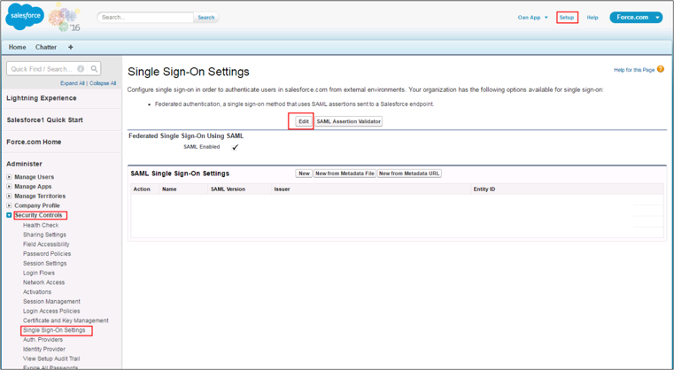
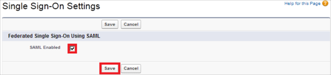
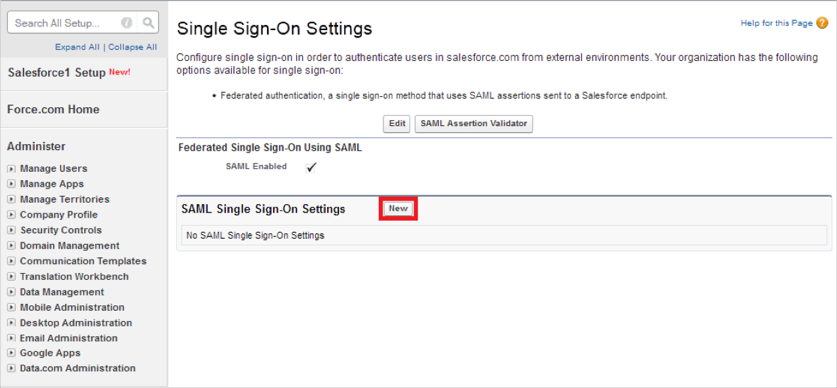
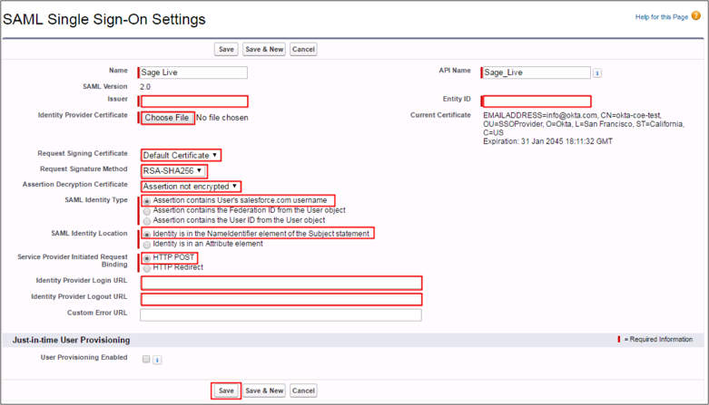
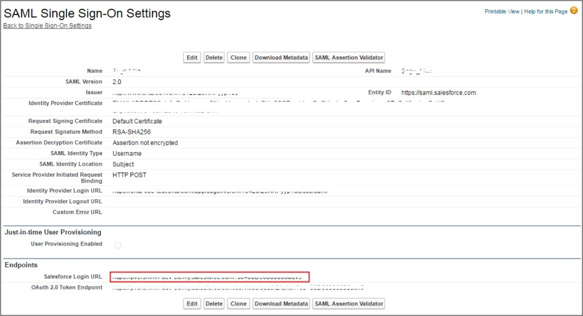
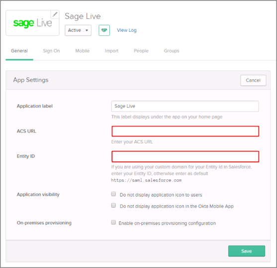
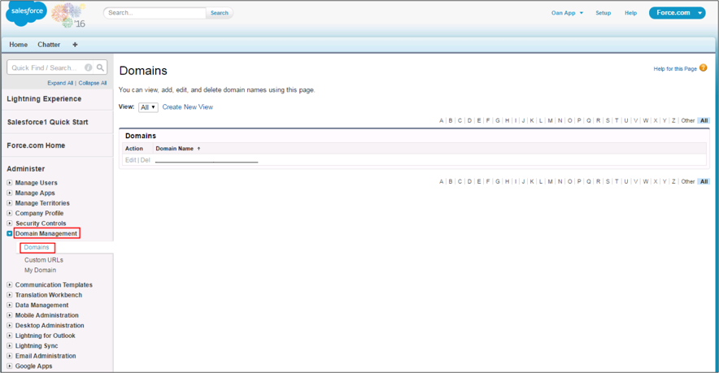
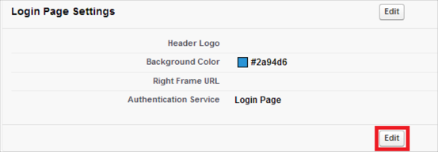
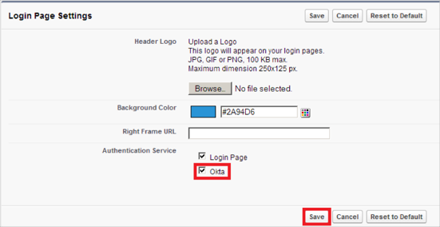
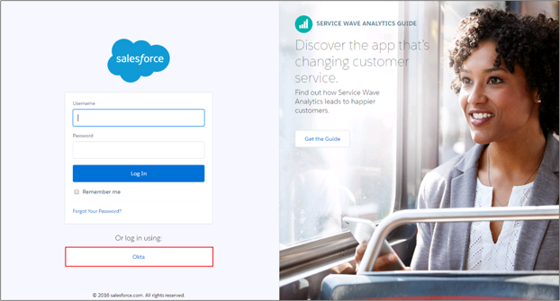

Log in to Sage Live with your administrator username and password token.
Navigate to Setup > Security Controls > Single Sign-On Settings.
Select Edit.

Check the SAML Enabled box, then click Save.

Select New.

Enter the following values in the corresponding fields (see screen shot at end of this step for reference):
Issuer: Copy and paste the following:
Sign into the Okta Admin Dashboard to generate this variable.Identity Provider Certificate: First download this certificate:
Sign into the Okta Admin Dashboard to generate this variable.Then select Choose File, and select the file you just downloaded.
Request Signing Certificate: Select Default Certificate.
Request Signature Method: Select RSA-SHA256.
Assertion Decryption Certificate: Select Assertion not encrypted.
SAML Identity Type: Select Assertion contains User's salesforce.com username.
SAML Identity Location: Select Identity is in the NameIdentifier element of the Subject statement.
Service Provider Initiated Request Binding: Select HTTP POST.
Identity Provider Login URL: Copy and paste the following.
Sign into the Okta Admin Dashboard to generate this variable.Identity Provider Logout URL: Copy and paste the following.
Sign into the Okta Admin Dashboard to generate this variable.Entity ID:
If you are using your custom domain for your Entity ID in Salesforce, enter your Entity ID, otherwise enter as default https://saml.salesforce.com.
Click Save:

Make a copy of the Salesforce Login URL from the SAML Single Sign-On Setting Detail:

In Okta, select the General tab for the Sage Live app, then click Edit and enter the following:
Paste the Salesforce Login URL value you just copied int the ACS URL field.
If you are using your custom domain for your Entity ID in Salesforce, enter your Entity ID, otherwise enter as default https://saml.salesforce.com into the Entity ID field.
Click Save.

In Salesforce, navigate to Setup > Domain Management > Domains, then select your domains:

On the Login Page Settings section, select Edit.

Select the Okta checkbox, then click Save.

Done!
Notes:
SP-initiated flows and IDP-initiated flows are supported.
Just In Time (JIT) provisioning is not supported.
Open your Salesforce login page.
Click Okta.
